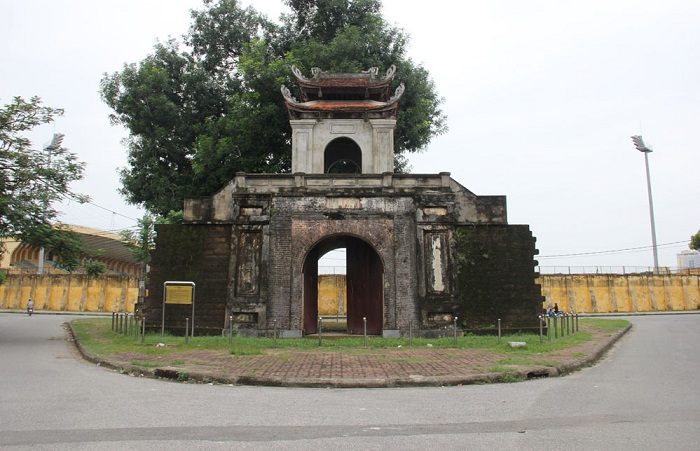

Có thể nói, đi thành phố Vinh du lịch mà chưa một lần ghé núi Quyết sẽ là một thiếu sót lớn. Núi Quyết Nghệ An nằm trong quần thể khu du lịch núi Quyết có diện tích gần 160 ha. Đây là nơi sinh sống của người Việt cổ cũng như có vị trí địa lý quan trọng.
Đường lên núi Quyết có những bậc thang dẫn lối đến Phượng Hoàng Trung Đô, có đền thờ vua Quang Trung thiêng liêng, quanh năm được phủ màu xanh bát ngát. Tại đây, vua Quang Trung cùng 10 vạn quân tiến ra Bắc giành lại thành Thăng Long đang bị quân Thanh chiếm đóng.
Thành cổ Vinh không chỉ là công trình có giá trị văn hóa, lịch sử mà còn vô cùng độc đáo với kiến trúc “vô – băng” kỳ công và tỉ mỉ. Những ai thuộc “team yêu lịch sử” thì nhất định không nên bỏ qua điểm đến này khi đi du lịch Vinh.
Khu du lịch thành phố Vinh Nghệ An còn trở nên đặc sắc hơn với sự có mặt của chùa Cần Linh. Ngôi chùa này còn có tên gọi khác là chùa Sư Nữ. Đây là ngôi chùa lớn và đẹp bậc nhất trong hệ thống chùa ở Nghệ An, đã được công nhận là di tích lịch sử cấp quốc gia. Nơi đây được xây dựng từ thời nhà Lê và thờ tổ Phật là Phật Thích Ca.
Tổng diện tích của chùa là 5.208m2 với kiến trúc gồm các khu: Tam quan, chính điện, bái đường, tăng đường, nhà tả vu và nhà hữu vu. Hiện trong chùa đang sở hữu bức tượng Phật Thích Ca làm bằng gỗ mít, được sơn son thiếp vàng có giá trị lớn về mặt nghệ thuật điêu khắc. Đặc biệt, chùa Cổ Linh lưu giữ quả chuông cổ có tuổi thọ trên 300 năm. Nơi đây còn có gần 100 pho tượng khác rất giá trị.